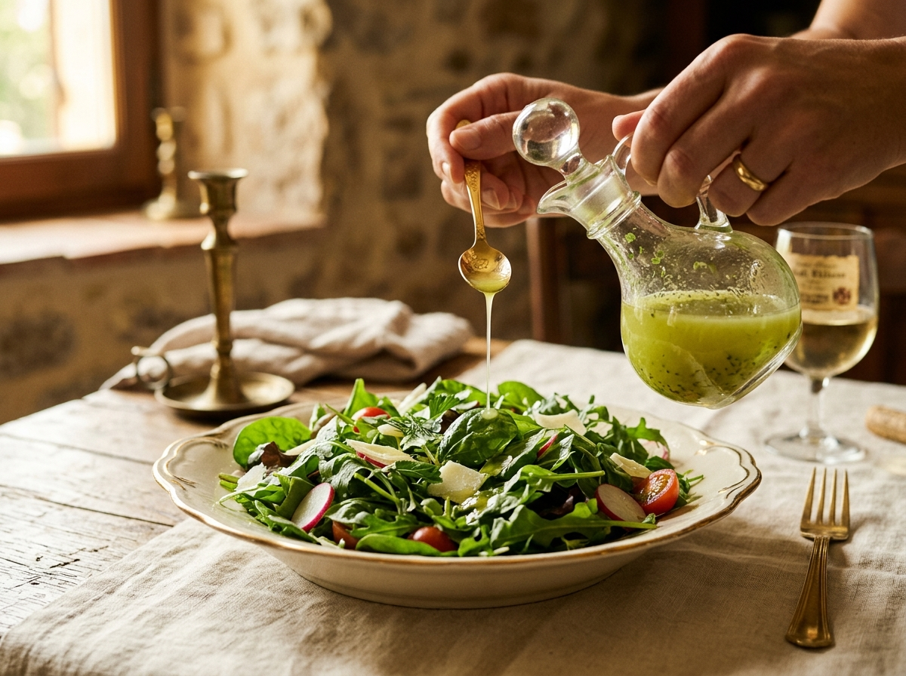
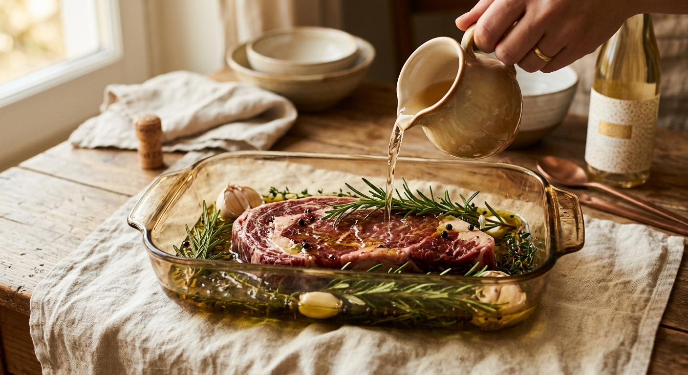
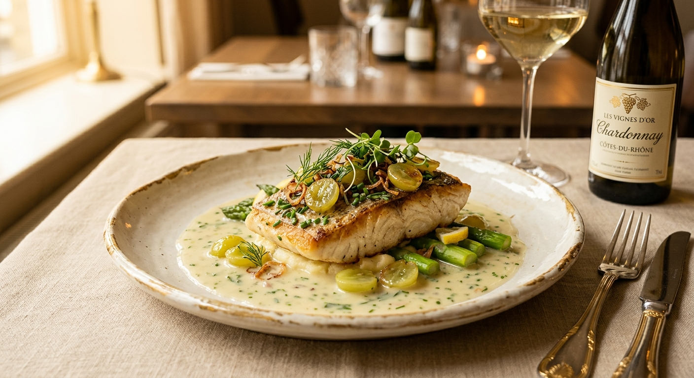
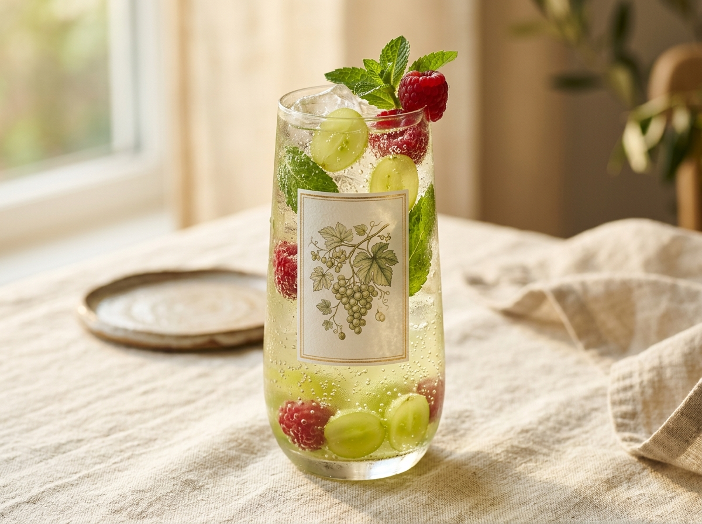
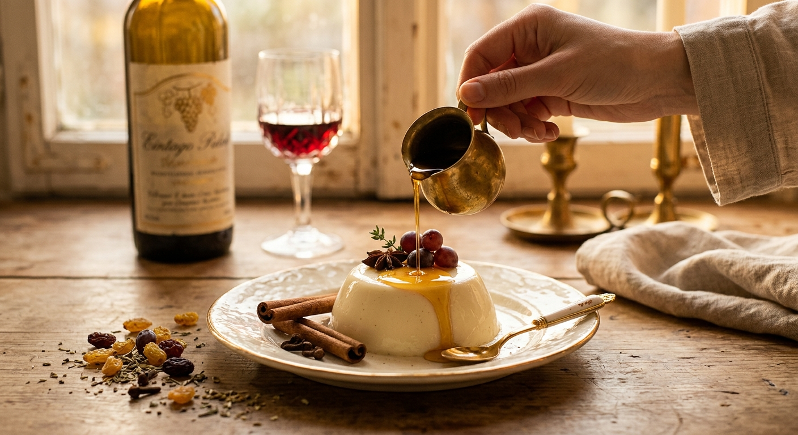
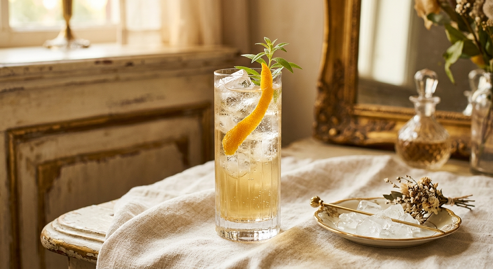
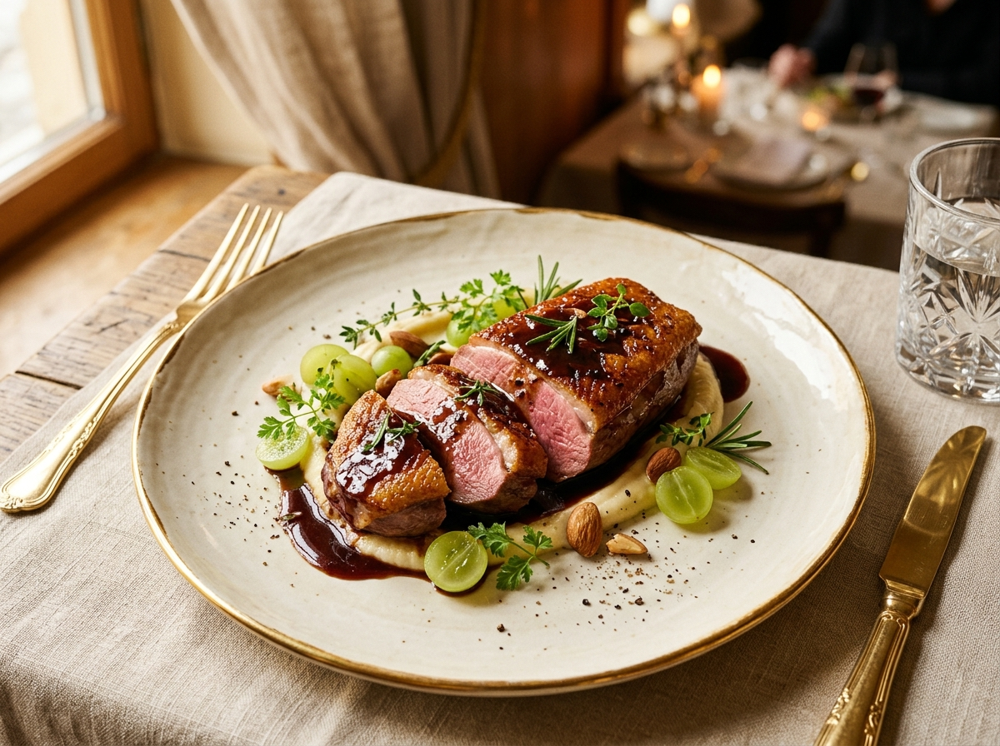

Заправка
Салатная заправка
Ингредиенты: 3 ст. л. Плиовержуса · 1 ст. л. оливкового масла · щепотка соли · свежемолотый перец
Смешайте вержус с маслом, посолите и поперчите. Заправьте салат из свежей зелени — руккола, латук, миксы. Кислинка мягче уксусной и не спорит с вином, поданным к столу.
Совет: красный вержус — к яркой зелени, белый — к нежной.

Маринад
Маринад для мяса
Ингредиенты: 100 мл Плиовержуса · 2 ст. л. масла · 1 зубчик чеснока · розмарин · соль, перец
Смешайте ингредиенты и залейте мясо на 1–2 часа. Вержус размягчает волокна и даёт лёгкую фруктовую кислинку без резкости уксуса. Подходит для стейка, свинины и шашлыка.

Соус
Соус к рыбе и курице
Ингредиенты: 50 мл Плиовержуса · 50 мл бульона · 30 г сливочного масла · шалот · соль
Обжарьте мелко нарезанный лук-шалот, влейте вержус и бульон, уварите вдвое. Вмешайте холодное сливочное масло. Идеален к запечённой рыбе и куриной грудке.
Совет: так же можно «деглазировать» сковороду после жарки мяса.

Напиток
Безалкогольный спритцер
Ингредиенты: 30 мл Плиовержуса · 150 мл газированной воды · лёд · веточка мяты · долька лимона
Налейте вержус в бокал со льдом, добавьте газированную воду и размешайте. Украсьте мятой и лимоном. Лёгкий кисловатый напиток без сахара и алкоголя — основа для коктейлей.

Топпинг
Сироп-топпинг для десертов
Ингредиенты: 200 мл Плиовержуса · 2–3 ст. л. мёда (по желанию) · корица · гвоздика
Уварите вержус с мёдом и специями на слабом огне до сиропа. Поливайте мороженое, панна-котту, фрукты или блины — кисло-сладкий топпинг с виноградным характером.

Бар
Основа для коктейлей
Ингредиенты: Плиовержус · тоник или спрайт · лёд · апельсиновая цедра
Бармены ценят вержус как замену лимонному соку: он даёт кислоту без резкости цитрусовых. Смешайте с тоником в пропорции 1:5, добавьте цедру — готов лёгкий «sour» без алкоголя.
Основное блюдо · Австрия
Куриные голени с вержусом
Ингредиенты: 4 куриные голени · 150 мл Плиовержуса · 2 шалота · 4 желтка · мускат · соль, перец
Голени обжарить с луком, добавить воду и 50 мл вержуса, тушить под крышкой ~45 минут. В конце вмешать желтки с оставшимся вержусом и прогреть до лёгкого загустения — нежный кисловатый соус готов. Рецепт винодельни Prabatsch-Aichinger.
Соус · Италия
Salsa Agresto — соус-песто
Ингредиенты: 80 г миндаля · 50 г грецких орехов · 2 зубчика чеснока · пучок петрушки · базилик · 90 мл оливкового масла · 90 мл Плиовержуса
Орехи поджарить 5 минут. Смешать в блендере с чесноком, зеленью, маслом и вержусом до консистенции песто. Подавайте с брускеттой, пастой, мясом или рыбой. Вержус добавляйте перед подачей — соус сохраняет яркий зелёный цвет.

Основное блюдо · Франция
Утиная грудка с соусом из вержуса
Ингредиенты: 2 утиные грудки · 80 мл Плиовержуса · 100 мл бульона · 30 г сливочного масла · шалот · соль, перец
Грудку обжарить кожей вниз до хруста, довести в духовке до нужной прожарки. На сковороде спассеровать шалот, влить вержус и бульон, уварить вдвое, вмешать холодное масло. Полить нарезанную грудку.
Салат · Германия
Тёплый чечевичный салат
Ингредиенты: 150 г чечевицы Puy · 1 красная луковица · горсть рукколы · 2 ст. л. Плиовержуса · 3 ст. л. оливкового масла · 1 ч. л. горчицы · соль, перец
Чечевицу отварить до готовности (~25 минут). Смешать вержус, масло, горчицу, соль и перец в заправку. Тёплую чечевицу смешать с луком и заправкой, добавить рукколу. По желанию — жареные орехи или фета.
Напиток · Австрия
Вержус-шорле с малиной и мятой
Ингредиенты: 20 мл Плиовержуса · 3 свежие малины · 2 листа мяты · 250 мл минеральной воды · лёд
Все ингредиенты смешать в стакане со льдом и хорошо размешать. Свежий кисловатый напиток без сахара — фирменный рецепт австрийской винодельни Prabatsch-Aichinger.
Заправка · Франция
Винегрет от Алена Дюкаса
Ингредиенты: 4 ст. л. Плиовержуса · 6 ст. л. оливкового масла · 1 шалот · веточка тимьяна · 5 горошин перца · ½ зубчика чеснока · соль
В ступке растереть тимьян, перец и чеснок. Смешать с мелко рубленным шалотом, залить вержусом и маслом. Дать настояться минимум 2 часа (в оригинале — 48), процедить, посолить. Идеален к зелёным салатам.